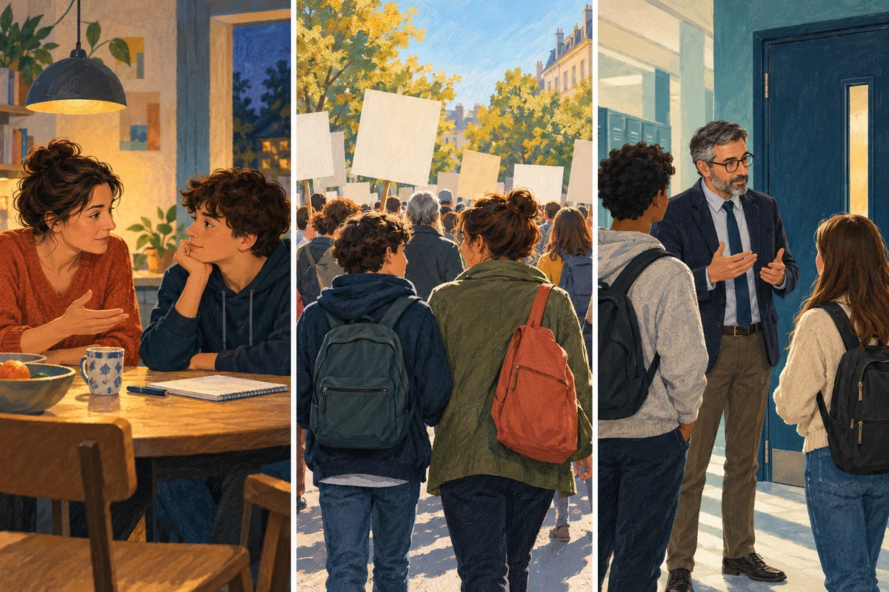

Une règle donnée par un parent, une décision publique contestée, une consigne de la direction d’un lycée : face à une autorité, on peut obéir, demander des explications ou refuser. Et une même personne peut faire les trois selon le contexte. La psychologie sociale aide à comprendre ces écarts, à condition de ne pas transformer les gens en « soumis » ou en « rebelles ».
La question à garder en tête : qu’est-ce qui fait qu’une autorité nous paraît légitime — ou, au contraire, contestable ?
Plusieurs éléments peuvent peser sur notre réaction : la confiance envers l’autorité, le sentiment que la règle est juste, la relation avec la personne qui la donne, les risques d’un refus et le soutien du groupe. Aucun de ces éléments ne suffit, à lui seul, à prédire ce que fera une personne.

Ces scènes sont conceptuelles : elles illustrent des situations, sans représenter une famille, un lycée ou une manifestation réelle.
Illustration originale générée pour THOT avec OpenAI ImageGen, 23 octobre 2026. Elle ne constitue pas une photographie de la mobilisation du 17 octobre.Obéir ne veut pas toujours dire être d’accord
Une personne peut suivre une consigne parce qu’elle la juge raisonnable, parce qu’elle fait confiance à celle qui la donne, parce qu’elle craint une sanction ou parce que tout le monde autour d’elle s’y conforme. Le geste visible est le même ; le raisonnement peut être différent.
Il faut aussi distinguer plusieurs réactions. Obéir, c’est suivre une consigne. Se conformer, c’est ajuster son comportement à celui du groupe, parfois sans ordre explicite. Contester, c’est exprimer un désaccord ; cela peut passer par une discussion, une procédure ou une manifestation. Enfin, se taire ne signifie pas nécessairement être d’accord : la personne peut hésiter, manquer d’informations ou redouter les conséquences d’une prise de parole.
L’autorité désigne le droit de donner une consigne reconnu — au moins en partie — par les personnes concernées. Le pouvoir de contrainte, lui, permet de faire appliquer une décision par des sanctions ou la force. Dans la vie réelle, les deux peuvent se mêler, mais ils ne sont pas identiques.
1. Les parents : protéger et laisser gagner en autonomie
En droit français, l’autorité parentale rassemble des droits et des devoirs exercés dans l’intérêt de l’enfant. Elle vise notamment sa protection, son éducation et son développement ; les parents doivent respecter sa personne et l’associer aux décisions selon son âge et sa maturité. Ce cadre ne signifie donc pas que toute décision parentale est automatiquement juste, ni que l’enfant n’a jamais son mot à dire. [1]
Une règle de sécurité peut être acceptée parce que son but paraît clair. Une règle touchant aux amitiés, aux vêtements ou à la vie privée peut être davantage discutée, surtout quand l’adolescent estime pouvoir décider lui-même. La réaction dépend alors du sujet précis, de l’âge, de l’histoire familiale et de la manière dont la règle est expliquée.
Une étude portant sur 703 adolescents au Chili a trouvé que l’accord avec les règles parentales et les croyances sur la légitimité de l’autorité des parents étaient liées à l’obéissance. Le lien variait aussi d’un sujet à l’autre. C’est un résultat situé — dans un échantillon et un contexte précis — et non une loi qui décrirait toutes les familles. Il montre néanmoins qu’une règle n’est pas reçue indépendamment de la façon dont l’adolescent la comprend. [2]
Contre-exemple : refuser une consigne peut exprimer une recherche d’autonomie ou un désaccord sur ses limites, plutôt qu’un rejet général des parents. À l’inverse, obéir peut venir de la confiance, mais aussi de la dépendance ou de la peur d’une punition. Le comportement seul ne permet pas de trancher.
2. L’État : respecter une règle, la subir ou la contester
Les lois et les décisions publiques s’appuient sur des institutions et peuvent être accompagnées de sanctions. Mais la peur de la sanction n’explique pas tout : on peut aussi respecter une règle parce qu’on juge que l’institution a le droit de la fixer, même si l’on n’approuve pas chaque décision.
Jason Sunshine et Tom Tyler ont étudié deux enquêtes menées à New York sur la police. Leurs résultats relient le soutien du public à la légitimité que les personnes accordent aux institutions, et soulignent l’importance de procédures équitables. On ne peut pas appliquer directement ces résultats à toutes les institutions françaises. Ils suggèrent toutefois que la manière dont une autorité traite les personnes compte aussi, au-delà de ses décisions. [3]
La mobilisation du 17 octobre 2026 fournit un exemple actuel de contestation. Dans le contexte du mouvement lycéen, la FCPE nationale a appelé les parents à rejoindre les manifestations pour soutenir les revendications des élèves. Cela établit la position publique de cette fédération, pas celle de tous les parents ni les raisons personnelles de chaque manifestant. [4][5]
Contre-exemple : contester une décision de l’État ne revient pas forcément à rejeter toute autorité publique. Une personne peut respecter certaines lois et manifester contre une mesure qu’elle juge injuste. D’autres peuvent ne pas participer, par désaccord, par prudence ou parce qu’elles estiment que manifester ne changera rien. Une même journée de mobilisation rassemble donc des positions et des motivations qui ne se confondent pas.
3. La direction scolaire : une autorité de fonction, avec des limites
Au collège et au lycée, la direction organise l’établissement et veille notamment à la sécurité et au respect du règlement intérieur. Le chef d’établissement représente l’État dans l’établissement. Son autorité a des limites : c’est le conseil d’administration qui adopte le règlement intérieur, lequel doit préciser les droits et les devoirs de la communauté scolaire. Il rappelle aussi les libertés d’information et d’expression des élèves. [6][7][8]
Les blocages lycéens d’octobre ont placé certaines directions face à trois enjeux : assurer la sécurité, maintenir l’établissement ouvert lorsque c’est possible et répondre aux revendications. Dans un reportage publié le 12 octobre, Le Monde décrit des situations contrastées. Beaucoup de blocages se sont déroulés sans violence ; certains établissements ont connu des dégradations ou des affrontements. Ces exemples ne permettent pas de généraliser à tous les lycées. [9]
Contre-exemple : un élève peut suivre une consigne de sécurité tout en contestant la décision qui l’a précédée. Il peut aussi demander une explication, passer par ses représentants ou prendre part à une mobilisation. Respecter le rôle d’une direction ne signifie pas renoncer à discuter du contenu ou de l’application d’une règle.
Pourquoi les réactions s’opposent-elles ?
On peut retenir quatre grandes pistes, qui se combinent sans former une recette automatique :
- La justice perçue : la règle semble-t-elle cohérente et appliquée de manière égale ?
- La relation : fait-on confiance à cette personne, et croit-on qu’elle agit pour une raison valable ?
- Les risques : que peut-on perdre en refusant — ou en obéissant ?
- Le groupe et les valeurs : les proches soutiennent-ils la contestation, et la consigne heurte-t-elle une conviction importante ?
Les expériences de Stanley Milgram sont souvent résumées par l’idée que « les gens obéissent aveuglément ». Son étude de 1963 rapporte que 26 des 40 participants de sa condition expérimentale sont allés jusqu’au dernier niveau de l’appareil présenté comme un générateur de chocs. Ce résultat célèbre ne décrit pas toutes les personnes ni toutes les autorités : il concerne une expérience particulière, menée dans un laboratoire avec une mise en scène spécifique. [10][11]
Haslam et Reicher proposent de relire ces résultats autrement que comme une soumission aveugle. Selon leur analyse, certains participants ont pu s’identifier à l’expérimentateur et au but qu’ils lui attribuaient : faire progresser la science. Cette interprétation insiste sur le sens donné à l’action et sur l’adhésion à une cause, pas seulement sur le statut de la personne qui donne l’ordre. Elle ne signifie ni que tous les participants pensaient pareil, ni que la pression du laboratoire n’a compté pour rien. C’est une lecture théorique parmi d’autres, discutée dans la recherche. Elle montre surtout pourquoi le chiffre « 26 sur 40 » ne suffit pas à expliquer leurs raisons, et pourquoi il faut distinguer le comportement observé de l’interprétation qu’on en donne. [11]
En 2009, Jerry Burger a réalisé une réplication partielle avec des garde-fous éthiques : les participants étaient arrêtés à 150 volts, au moment où l’apprenant protestait pour la première fois. L’étude permet une comparaison limitée avec Milgram ; elle ne reproduit pas l’expérience entière et ne tranche pas à elle seule la question de l’obéissance. Le message le plus prudent est donc celui-ci : les situations et les relations avec l’autorité comptent, mais elles ne font pas disparaître le jugement individuel. [12][13]
Ce qu’il faut retenir
- Les parents, l’État et une direction scolaire tirent leur autorité de sources différentes, et leurs pouvoirs ont des limites.
- Une même réaction visible peut venir de motifs différents : confiance, accord, pression, prudence ou peur d’une sanction.
- Obéir ou contester dépend de la règle, de la relation et du contexte ; ce n’est pas un diagnostic de personnalité.
Sources et références
- Service-Public.fr, « Exercice de l’autorité parentale », vérifié le 6 octobre 2025. Consulter la fiche officielle.
- Nancy Darling, Patricio Cumsille et M. Loreto Martínez, « Adolescents’ as active agents in the socialization process: legitimacy of parental authority and obligation to obey as predictors of obedience », Journal of Adolescence, 30(2), 2007, p. 297–311. Étude sur 703 adolescents chiliens. DOI : 10.1016/j.adolescence.2006.03.003.
- Jason Sunshine et Tom R. Tyler, « The Role of Procedural Justice and Legitimacy in Shaping Public Support for Policing », Law & Society Review, 37(3), 2003, p. 513–548. Étude portant sur le rapport du public à la police à New York. DOI : 10.1111/1540-5893.3703002.
- FCPE, « Les revendications de la jeunesse doivent être entendues », communiqué mis à jour en octobre 2026 ; appel de la fédération nationale aux parents à rejoindre les manifestations du 17 octobre. Lire le communiqué.
- « Mouvement lycéen : un mois de mobilisation et le pari de la convergence “jeunes et jaunes” », Le Monde, 16 octobre 2026. Lire l’article.
- Code de l’éducation, article D. 422-5, rôle du chef d’établissement comme représentant de l’État et organe exécutif de l’établissement. Consulter sur Légifrance.
- Code de l’éducation, article R. 421-93, règlement intérieur et droits et devoirs de la communauté éducative. Consulter sur Légifrance.
- Ministère de l’Éducation nationale, « Le chef d’établissement », Observatoire national de la sécurité et de l’accessibilité des établissements d’enseignement, mise à jour du 10 juillet 2019. Consulter la fiche.
- Sylvie Lecherbonnier et Eléa Pommiers, « French high school protests: Exhausted principals struggle to deal with violent clashes at their schools », Le Monde, 12 octobre 2026. Lire le reportage.
- Stanley Milgram, « Behavioral Study of Obedience », Journal of Abnormal and Social Psychology, 67(4), 1963, p. 371–378. DOI : 10.1037/h0040525.
- S. Alexander Haslam et Stephen D. Reicher, « 50 Years of “Obedience to Authority”: From Blind Conformity to Engaged Followership », Annual Review of Law and Social Science, 13, 2017, p. 59–78. DOI : 10.1146/annurev-lawsocsci-110316-113710.
- Jerry M. Burger, « Replicating Milgram: Would People Still Obey Today? », American Psychologist, 64(1), 2009, p. 1–11. DOI : 10.1037/a0010932.
- American Psychological Association, « More shocking results: New research replicates Milgram’s findings », mars 2009. Présentation des garde-fous et limites de la réplication partielle de Burger. Lire la synthèse.